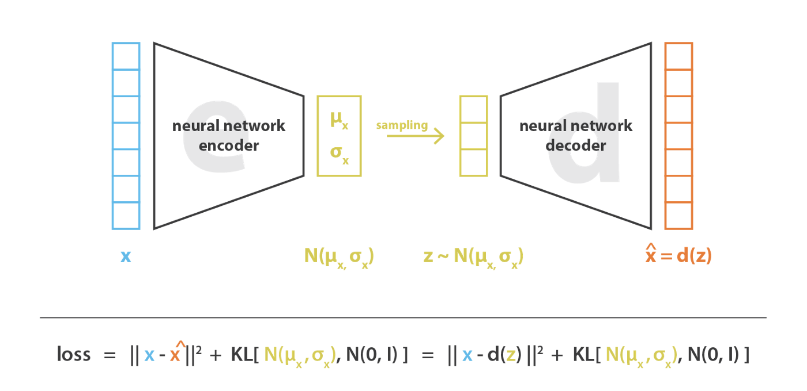

如何评价和查找会议、论文质量
h5
https://zhuanlan.zhihu.com/p/392569545
Paper with code
Deeplake
https://github.com/activeloopai/deeplake
什么是研究创新点与研究意义
https://zhuanlan.zhihu.com/p/496886699
https://www.zhihu.com/people/l349074299 量子纠缠态 CV/ASR领域搬砖工，目前主要精力在视觉大模型
AE（DAE,CAR,VAE）
 https://zhuanlan.zhihu.com/p/150814670